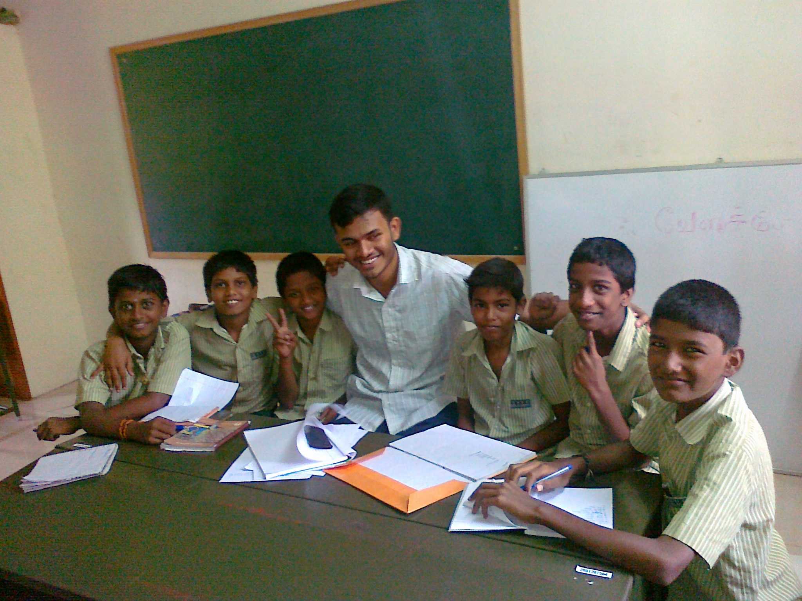

ഓർമിക്കാൻ ഒരുപാട് നല്ല നിമിഷങ്ങൾ സമ്മാനിച്ച ഐ.ഐ.ടി. കലാലയ ജീവിതത്തിന്റെ, ഒരു ഓർമ്മ കുറിപ്പ്.
ഞാൻ അഭിജിത്ത്. കൂടുതൽ അടുപ്പം ഉള്ളവർ 'സി.എസ്'എന്ന് വിളിക്കും. ഇനിഷ്യൽ ആണെങ്കിലും ആ വിളിക്ക് ഒരു സുഖം ഉണ്ട്. പ്രായത്തിന് ചെറിയവർ 'അഭിജിത്ത് ചേട്ടാ' എന്ന് വിളിക്കുമ്പോൾ നമുക്ക് പ്രായം കൂടിയ പോലെ തോന്നും. ഇതാവുമ്പോ അതില്ല! വെറുതെ ബാംഗ്ലൂരിൽ 'പോസ്റ്റ്' ആയി ഇരുന്നപ്പോൾ കഴിഞ്ഞ 4 വർഷത്തെ കോളേജ് ജീവിതം ഒന്ന് റെക്കോർഡ് ആക്കാം എന്ന് കരുതി. എന്നെ ഞാനാക്കിയ, ഒരുപാട് ഓർമകളും സന്തോഷങ്ങളും കുറച്ച് സങ്കടങ്ങളും ഒക്കെ നിറഞ്ഞ ആ കലാലയ ജീവിതം. കുറെ വർഷങ്ങൾ ഒക്കെ കഴിഞ്ഞ് പ്രായമാവുമ്പോൾ ഓർത്ത് ചിരിക്കാലോ! മനുഷ്യന്മാരല്ലേ. കുറച്ചൊക്കെ തെറ്റുകളും അബദ്ധങ്ങളും ആർക്കും സംഭവിക്കും. എനിക്കും സംഭവിച്ചിട്ടുണ്ട്. ചില കുസൃതികൾ! എല്ലാം തുറന്ന് പറയാൻ എനിക്കത്ര ദൈര്യം പോര. അതിനി എങ്ങാനും ഭാവിയിൽ വല്ല ആത്മകഥയും എഴുതുമ്പോൾ നോക്കാം.
2011 ജൂലൈ 26. ഐ.ഐ.ടി മദ്രാസിലെ എന്റെ ആദ്യ ദിവസം. മനസ്സിൽ നല്ല പേടി ഉണ്ടായിരുന്നു. കോളേജ് ലൈഫ് എങ്ങനെ ആവും, റാഗ്ഗിംഗ് , അകാദമിക്സ് ഒക്കെ എന്നെകൊണ്ട് താങ്ങുമോ.. അങ്ങനെ ഒരുപാട് വേവലാതികൾ മനസ്സിൽ ഉണ്ടായിരുന്നു. അച്ഛന്റെയും ചേട്ടന്റെയും കൂടെ ആണ് ജോയിൻ ചെയ്യാൻ എത്തിയത്. മഞ്ചേരിക്കാരനും പ്ലസ് ടു ഫ്രണ്ട്ഉം ആയ അൻസിൽ ന്റെ വാപ്പ, എന്തോ കെയർ-ഓഫിൽ ഐ.ഐ.ടി യിലെ തന്നെ താരമണി ഗസ്റ്റ് ഹൗസിൽ റൂം ഒപ്പിച്ചിരുന്നു. ഞങ്ങളും അവരുടെ കൂടെ അഡ്ജസ്റ്റ് ചെയ്യാം എന്ന് വിചാരിച്ചു.
ആദ്യ ദിവസം തന്നെ എനിക്ക് ഹോസ്റ്റലിൽ റൂം കിട്ടി. അലകനന്ദ ഹോസ്റ്റൽ റൂം 369B. ഹോസ്റ്റൽ ഓഫീസിൽ പോയി റൂം കീ ഒക്കെ വാങ്ങി ലഗ്ഗേജ് എല്ല്ലാം റൂമിൽ കൊണ്ട് പോയി വെച്ചു. സകല സാധനങ്ങളും ഗുരുനാഥിൽ പോയി വാങ്ങി. ആദ്യത്തെ ദിവസം എന്തായാലും ഹോസ്റ്റൽ റൂമിൽ നിന്നില്ല. അച്ഛന്റെയും ചേട്ടന്റെയും കൂടെ ഗസ്റ്റ് ഹൗസിൽ അഡ്ജസ്റ്റ് ചെയ്തു. അടുത്ത ദിവസമാണ് ജോയിൻ ചെയ്യണ്ടത്. അന്ന് രാവിലെ ആണ് പാലാ ബ്രില്ല്യന്റിൽ തന്നെ പഠിച്ച ഷഫീഖ് വരുന്നത്. പാലായിൽ പഠിച്ചുകൊണ്ടിരിക്കുമ്പോൾ അത്ര വലിയ പരിചയം ഇല്ലായിരുന്നു. പക്ഷെ അവനും അളകനന്ദ ഹോസ്റ്റൽ തന്നെ ആണ് എന്നറിഞ്ഞപ്പോൾ മുൻകൂട്ടി പരിചയപ്പെട്ടിരുന്നു. രാവിലെ തന്നെ SAC ഇൽ പോയി ജോയിനിങ്ങ് ഫൊർമലിറ്റീസ് എല്ലാം തീർത്തു. അന്ന് ഉച്ചക്ക് തന്നെ ഞാനും അൻസിലും പോയി സൈക്കിൾ വാങ്ങിച്ചു. ഒരേ മോഡൽ. എന്റെത് ചുവപ്പ്. അവന്റെത് വെളുപ്പ്. സെക്കന്റ് ഇയറിൽ പഠിക്കുന്ന മഞ്ചേരി ബോയ്സിൽ പഠിച്ച മനു ചേട്ടനെ ചെന്നൈ വരുന്നതിന്റെ മുന്നേ ഫോണിൽ വിളിച്ചിരുന്നു. അപ്പോൾ മൂപ്പര് പരഞ്ഞതാണ്, സൈക്കിൾ പുറത്ത് നിന്ന് വാങ്ങിച്ചാൽ മതി. പക്ഷെ ഓഫർ കണ്ടപ്പോ സെയിൽസ് ന്നു തന്നെ വാങ്ങിച്ച്! മുതു നെല്ലിക്കയുടെ അവസ്ഥ ആയി പിന്നെ!
അങ്ങനെ അന്ന് കുറെ ക്യാമ്പസിലൂടെ സൈക്കിൾ ഒക്കെ ചവിട്ടി. അന്ന് വൈകീട്ട് എന്റെ അച്ഛനും അൻസിലിന്റെ വാപ്പയും ഒക്കെ നാട്ടിലേക്ക് തിരിച്ചു പോയി. നോ സങ്കടം! പോവാൻ കാത്ത് നില്ക്കുകയായിരുന്നു കറങ്ങാൻ! അന്നാണ് ആദ്യത്തെ ഹോസ്റ്റൽ രാത്രി. റാഗ്ഗിംഗ് കിട്ടുമോ എന്ന് നല്ല പേടി ഉണ്ടായിരുന്നു. ഞാൻ വൈകീട്ട് റൂമിൽ എത്തിയപ്പോൾ ഒരു റൂംമെറ്റ് മാത്രമേ എത്തിയിട്ടുള്ളൂ. അകിതി ചന്ദൻ റെഡി. എന്റെ പകുതി സൈസ് മാത്രമേ ഉള്ളൂ. വയസ്സ് 16. അന്ദ്രപ്രദേശ് കുർണൂൽ ആണ് സ്വദേശം. പാവം പയ്യൻ. നല്ല കൂതറ ഇംഗ്ലീഷ്. കമ്പനിക്ക് ആളായി. എന്നെ പോലെ തന്നെ നല്ല ജബ ജബ ഇംഗ്ലീഷ് ആയിരുന്നു! അവന്റെ അച്ഛനും അമ്മയും അന്നേ ദിവസം ആ റൂമിൽ തന്നെ ആണ് ഉറങ്ങാൻ പ്ലാൻ എന്ന് ഞാൻ കുറച് കഴിഞ്ഞപ്പൊഴാണ് അറിഞ്ഞത്. അപ്പൊ തന്നെ, ഞാൻ വലിഞ്ഞു. രണ്ട് റൂം അപ്പുറം ആണ് സാദ് മുബാറക് ന്റെ മുറി. ബാലുശ്ശേരിക്കാരൻ. അവനും റൂമിന്റെ കാര്യത്തിൽ എന്തോ പ്രശ്നം ഉണ്ടായിരുന്നു. ഞാനും അവനും കൂടെ മുകളിലെ ഏതോ ഒരു റൂമിൽ പോയി കിടന്നുറങ്ങി. അടുത്ത ദിവസം ആണ് ഞാൻ എന്റെ റൂംമെറ്റ്നെ ശരിക്കും പരിജയപ്പെടുന്നത്. പെട്ടന്ന് തന്നെ നല്ല കമ്പനി ആയി. 'ബേബി ചന്ദൻ' എന്ന് വിളിക്കാനും തുടങ്ങി. അവൻ എന്നെ 'മൈ എഗ്ഗ്സ്' എന്ന് വിളിക്കാൻ തുടങ്ങി. എന്താ ഉദ്ദേശിച്ചത് എന്ന് എനിക്ക് ഇപ്പോഴും അറിയൂല.
മൂന്നാമത്തെ റൂംമെറ്റ് അന്നും വന്നില്ല. അടുത്ത ദിവസം അവന്റെ അമ്മ വന്ന് ലഗേജ് എല്ലാം വെച്ചിട്ട് പോയി. അമ്മയെ കണ്ടപ്പോഴേ എനിക്ക് ചെക്കൻ ശെരിയവൂലന്നു ഡൌട്ട് ഉണ്ടായിരുന്നു. വിചാരിച്ചപോലെ തന്നെ ആയിരുന്നു. കള്ള മൈ**. പേര് ആയുഷ് അഗർവാൾ. വിശാഖപട്ടണം താമസമാക്കിയ രാജസ്ഥാൻകാരാൻ മർവാടി ചെറ്റ! ഞാൻ ആണ് ആദ്യം മുറി ഒക്കുപ്പൈ ചെയ്തത്. ഫാനിന്റെ നേരെ താഴെ ഉള്ള ബെഡ് ആണ് ഞാൻ തിരഞ്ഞെടുത്തത്. അവൻ വന്ന് കൂൾ ആയി എന്റെ സാധനങ്ങൾ എല്ലാം മാറ്റി വെച്ച് ബെഡ് കയ്യടക്കി. ചോദിയ്ക്കാൻ ചെന്നപ്പോ ഇംഗ്ലീഷിൽ കട്ട ടയലോഗ്. നമ്മൾ പിന്നെ ഈ പോളിടെക്നിക്കിൽ, അല്ല ഈ ഇംഗ്ലീഷ് മീഡിയം ഒന്നും പഠിക്കാത്തത് കാരണം തിരിച്ച് ഒന്നും പറഞ്ഞില്ല. വിട്ടുകൊടുത്തു. പിന്നീടങ്ങോട്ട് അവന്റെ ചൊറി തന്നെ ആയിരുന്നു. ആദ്യത്തെ 2-3 ദിവസം ഫോട്ടോ എടുക്കലും സെൻട്രൽ വർക്ക്ഷോപ്പ് കറങ്ങലും ഒക്കെ ആയി പോയി. ഇംഗ്ലീഷ് "ഓ" ലെവൽ എക്സാം ഉണ്ടായിരുന്നു. പുഷ്പം പോലെ പോയി എഴുതി വന്നു. റിസൾട്ട് വന്ന കഥ വൈകാതെ പറയാം! അങ്ങനെ ഒന്നുരണ്ട് ദിവസം കഴിഞ്ഞപ്പോൾ സീനിയേഴ്സ് ഒക്കെ വന്നു തുടങ്ങി. ആദ്യത്തെ ദിവസം തന്നെ, ഒരു വെള്ളിയാഴ്ച, സീനിയേഴ്സ് വിളിപ്പിച്ചു. ശെരിക്കും എന്നെ വിളിച്ചതല്ല. ഫസീഹ് പണി തന്നത്താണ്. പാലായിലെ ഏറ്റവും അടുത്ത സുഹൃത്തായിരുന്നു ഫസീഹ്. എല്ലാ തരികിട പരിപാടികൾക്കും കൂട്ട് അവനായിരുന്നു. അവന്റെ ചേട്ടൻ ഫഹീമ്ക്ക, അവിടെ തന്നെ 5th ഇയറിൽ ഉണ്ട് എന്ന ദൈര്യം ആ തെണ്ടിക്ക് ഉണ്ട്. അവന് എന്നെ അന്ന് രാത്രി വിളിച്ചു പറഞ്ഞു, 'എടാ രാഹുൽ ചേട്ടന് നമ്മളെ കാണണം. നീ വാ!' രാഹുൽ എം നായർ - പാലായിൽ ഞാൻ നിന്ന ഹണികോംബ് ഹോസ്റ്റലിലെ പൂർവവിദ്യാത്ഥി ആണ്. പണ്ട് വന്നു മോട്ടിവെറ്റ് ചെയ്തിട്ടൊക്കെ ഉണ്ട് പുള്ളി. അതുകൊണ്ട് ഒന്നും സംഭവിക്കില്ല എന്ന വിസ്വാസതൊടെ പോയി. തമ്പി 546ൽ വരാൻ ആണ് പറഞ്ഞത്. ഹോസ്റ്റൽ കണ്ടുപിടിച് അവടെ എത്തി. റൂമിന്റെ പുറത്ത് ഒരു 10 ജോഡി ചെരുപ്പ്! ഉറപ്പിച് - സീൻ കോൻട്ര! തിരിച്ച് നടക്കാൻ നില്ക്കുമ്പോ ആണ് ആസിഫ്'ക്ക (അന്ന് 4th ഇയർ) പിന്നിന്ന് വരുന്നത്. എന്റെ ചുറ്റിത്തിരി കണ്ടപ്പോ തന്നെ പൊക്കി. "കേറിക്കോ കേറിക്കോ. ദൈര്യായിട്ട് കേറിക്കോ. ഫ്രെഷീ അല്ലെ?!" സ്നേഹത്തോടെ ഉള്ള ആ ഡയലോഗിൽ എല്ലാം അലിഞ്ഞു. കേറി. പെട്ടൂ!
തലങ്ങും വിലങ്ങും ഒക്കെ ചോദ്യങ്ങൾ ആയിരുന്നു. "കുത്ത് കാണാറുണ്ടോ?" - സ്ഥിരം ചോദ്യം. ഇല്ല എന്ന് പറഞ്ഞു സീൻ ആയി. നിനക്കെന്താടാ കണ്ടാൽ, നീ ആരെടാ പുന്ന്യലനാണോ! ചത്ത്! പിന്നെ സ്ഥിരം കുറെ ക്ലീഷേ ചോദ്യങ്ങൾ - "നീ ബൈ-സെക്സ്വൽ ആണോ യൂണി സെക്സ്വൽ ആണൊ?", "ഇതിൽ ആരാ കുണ്ടൻ?", "ഞങ്ങളുടെ ഓരോരുത്തരുടെയും ഡിപ്പര്ട്ട്മെന്റ് ഗസ് ചെയ്യ്?" അങ്ങനെ എന്തൊകെയോ. എനിക്ക് നല്ല ജാഡ ആണ് എന്ന് വരുത്തി തീർത്തു. അന്ന് ഫേസ്ബുക്കിൽ എന്റെ പേര് "Abhijith CS Abhy" എന്നായിരുന്നു. ഡിപ്പാർട്ട്മെന്റ് CS ആയത് കൊണ്ട് ജാഡ കാണിക്കാൻ ഇട്ടതാണ് എന്നാണ് പലരും വിചാരിച്ചത്. അതിന്റെ പേരിലും കുറെ റാഗ്ഗിംഗ് കിട്ടി. അന്ന് അവിടെ നിന്നും ഇറങ്ങിയത് ഏകദേശം 4 മണി ആയപ്പോൾ ആയിരുന്നു. "അണ്-കംഫോർട്ടബിൽ ആയവർക്ക് പോവാം" എന്ന് പറഞ്ഞപ്പോ തന്നെ ഫസീഹ് തെണ്ടി മുങ്ങി. എനിക്ക് എന്ത് കൊണ്ടോ വലിയാൻ ചാൻസ് കിട്ടിയില്ല. അങ്ങനെ ഫസ്റ്റ് റാഗ്ഗിംഗ് എക്സ്പീരിയൻസ് കിടിലൻ ആയിരുന്നു. പിന്നീട് അങ്ങൊട്ട് ചറപറാ റാഗ്ഗിംഗ് കിട്ടി. ഹോസ്റ്റലിൽ നിന്ന് നോണ്-മല്ലുസ് വകയും കട്ടക്ക് റാഗ്ഗിംഗ്. പക്ഷെ എല്ലാരും പറയുന്നത്, ബാക്കി ഉള്ളവർക്ക് കിട്ടയത് ആയി കമ്പയർ ചെയ്താൽ എന്റെ കളി വെച്ച് എനിക്ക് ഒരു മണ്ണാൻകട്ടയും കിട്ടിയില്ല എന്നാണ്. എന്റെ സൈസ് കണ്ടിട്ടാവാം! അജാനബാഹു ആണല്ലോ!
നോണ് മല്ലുസ് ന്റെ അടുത്ത് നിന്നുള്ള റാഗ്ഗിംഗ് നല്ല കോമഡി ആയിരുന്നു. ഞങ്ങളുടെ ഇംഗ്ലീഷ് കേട്ട് ചിരിക്കാനേ അവർക്ക് ടൈം കിട്ടിയുള്ളൂ. ഓയിൽ, മോളിക്യൂൾ, കോളേജ്. ഈ 3 വാക്കുകൾ ഒരു 50 തവണ എങ്കിലും പല സമയത്തായി പ്രൊനൗൻസ് ചെയ്യേണ്ടി വന്നിട്ടുണ്ട്! അതിനിടക്ക് റാഗ് ചെയ്യാൻ അവര് മറന്നു! ആദ്യം പണി തന്നത് അനിരുധ് പാടിയ ആണ്. 17 ഹൊസ്റ്റെൽസിന്റെ പേര് പഠിക്കാൻ പറഞ്ഞു. അടുത്ത ദിവസം പോയി പറഞ്ഞു കൊടുത്തു. അപ്പൊ അടുത്ത പണി. എല്ലാ ഡീൻസ് ന്റെയും പേര് പഠിക്കണം. ഞാൻ നിർത്തി. അയാൾ കാണാതെ മുങ്ങി നടക്കാൻ തുടങ്ങി. അയാളുടെ റൂമിന്റെ മുന്നിലൂടെ പോയിട്ട് വേണം ഡിസ്പെൻസറിൽ നിന്നും കുടിക്കാൻ വെള്ളം എടുക്കാൻ. കുറച്ച് കാലം താഴെ ഫ്ലോറിൽ വരെ പോയി വെള്ളം എടുക്കാറായിരുന്നു പിന്നീട്. ഹോസ്റ്റലിൽ റാഗ് ചെയ്യാനുള്ള ഒഫീഷ്യൽ വേദി ആയിരുന്നു റോൾ കാൾ. റൂം നമ്പർ അനുസരിച് റാഗ്ഗിംഗ് - അല്ല, ഇന്ററാക്ഷൻ! ഓരോ ദിവസവും ഒരു 5-6 പേരെ വെച്ച് പൊരിച്ചു. റൂം 369ന്റെ ദിവസം ആയപ്പോ ഞാൻ മുങ്ങി! പക്ഷെ റൂംമെറ്റ് ആയുഷ് സീനിയേഴ്സ് നെ ഞെട്ടിച് സീൻ ആക്കിയിരുന്നു. ഇത് ഇന്ററാക്ഷൻ അല്ല, റാഗ്ഗിംഗ് ആണ്. അവൻ വാർഡന്റെ അടുത്ത് കംപ്ലൈന്റ്റ് ചെയ്യും എന്നൊക്കെ. അതോടെ റോൾ കാൾ വെറും അറ്റെൻഡൻസ് എടുക്കലായി പിന്നെ.
റൂം ഫാദർ 'സിംഗ്ലെറ്റ്', ലവന്റെ ഫ്രണ്ട് ലഡ്ഡു, ടോം അങ്ങനെ കുറെ അലവലാതികൾ പണികൾ തന്നുകൊണ്ടെ ഇരുന്നു. കുപ്പിയിൽ വെള്ളം നിറച്ച കൊണ്ട് വരൽ, പാർസൽ വാങ്ങിച്ച് വരൽ, എ.ടി.എമിൽ പോയി കാശ് എടുത്തോണ്ട് വാരൽ, പ്രിന്റ് എടുത്തോണ്ട് വരൽ, ഇതൊക്കെ ആയിരുന്നു പ്രധാന പരിപാടികൾ. അതിനിടക്ക് ആണ് വർക്ക്ഷോപ്പ് ഡ്രസ്സ് വാങ്ങിക്കാനും വല്ല ബുക്സ് കിട്ടുവാണെങ്കിൽ വാങ്ങിക്കാനും മനു ചേട്ടന്റെ വിങ്ങിൽ പോകുന്നത്. മുന്പ് ഫോണിലൂടെ സംസാരിച്ച പരിജയം ഉള്ളതിനാൽ ഒരു മായം ഒക്കെ കാണും എന്ന് കരുതി. എവടെ! സ്കൂളിലെ Crush നെ കുറിച്ച വിവരിക്കാൻ പറഞ്ഞു ചൊറിയോട് ചൊറി. 'ചേച്ചീ' ന്നു വിളിക്കപ്പെടുന്ന അഖിലും അർജുൻ ബി.ജെയും കട്ടക്ക് ചൊറിഞ്ഞു. പെരും തന്നു. 'കോമളു' - ഫണ്ട എന്താ എന്ന് എനിക്ക് തന്നെ ഓർമയില്ല! നല്ല ബോർ പേരായത് കൊണ്ട് ഞാൻ ആരോടും പറയരും ഉണ്ടായിരുന്നില്ല.
ആദ്യത്തെ ദിവസം ക്ലാസിനു പോയത് നല്ലപോലെ ഓർക്കുന്നുണ്ട്. തലേ ദിവസം പ്ലസ് ടു കൂടെ ഉണ്ടായിരുന്ന, സെക്കന്റ് ഇയറിലെ അരുണ് ന്റെ അടുത്ത് പോയി ടൈം ടേബിൾ മനസ്സിലാക്കാൻ ഒരു ശ്രമം നടത്തി. കുറെ A1, B1.. ഒക്കെ കണ്ടിട്ട് ആകെ കണ്ഫ്യുഷൻ ആയിരുന്നു. തൽക്കാലം അടുത്ത ദിവസം ഏത് ക്ലാസ്സിലേക്ക് പോവണം എന്ന് അരുണ് പറഞ്ഞു തന്നു. നോട്ട് ബുക്ക് ഒക്കെ വാങ്ങി, 2 സെറ്റ് പെൻ പെൻസിൽ ഒക്കെ വാങ്ങി വെച്ചിരുന്നു. ആദ്യത്തെ ദിവസം അല്ലെ, ഒരു കുറവും വരുത്തണ്ട എന്ന് വിചാരിച്ചു. അങ്ങനെ അടുത്ത ദിവസം CLTയിൽ ഫസ്റ്റ് ക്ലാസ്സ് നു പോയി. ID1100. പ്രൊഫ. സൂസി വർഗീസ് ന്റെ 'കത്തിയടി'! ഫസ്റ്റ് ക്ലാസ്സ് തന്നെ കട്ട ബോർ! എന്നാലും എ.സി ക്ലാസ്സ് റൂം ഒക്കെ കണ്ടപ്പോൾ, ഒന്ന് ആശിച്ചു പോയി, എല്ലാ ക്ലാസ്സ് റൂമുകളും ഇങ്ങനെ തന്നെ ആവും! ഐവാ! അത് വെറും കിനാവായിരുന്നു! ഉച്ചക്ക് ശേഷമുള്ള CRC യിലെ റൂമുകളിലെ ക്ലാസുകൾ ചെന്നൈ ചൂട് സഹിച്ചത് എങ്ങനെ എന്ന് എനിക്ക് അറിയില്ല.
ആദ്യത്തെ 2-3 ആഴ്ച കഴിഞ്ഞപ്പോൾ പിന്നെ റാഗ്ഗിംഗ് ഒക്കെ പതുക്കെ കുറഞ്ഞു. സീനിയേഴ്സ് എല്ലാം നല്ല കമ്പനി ആയി തുടങ്ങി. നന്ദുവും ഷഫീഖും റൂംമേറ്റ്സ് ആയിരുന്നു. ഞങ്ങളുടെ പ്രധാന പരിപാടി നട്ടപ്പാതിരക്ക് ചർച്ചകൾ ആയിരുന്നു. മിക്ക ദിവസങ്ങളിലും റോഷനും കൂടും. ദൈവം ഇല്ലാന്ന് പറഞ്ഞു നടക്കുന്ന നന്ദു. ദൈവം മാത്രമേ ഉള്ളൂ എന്നമട്ടിൽ ഷഫീഖ്. രണ്ടു സൈഡിലും കാൽ വെച്ച ഞാനും റോഷനും. മിനിമം 10 ദിവസം എങ്കിലും ഇതിനെ കുറിച്ച് ചർച്ചകൾ ഉണ്ടായിട്ടുണ്ട്. പുലർച്ചെ 4-5 മണി വരെ മിനിമം! സി.ബി.എസ്.സി-സ്റ്റേറ്റ് സിലബസ് ആയിരുന്നു വേറെ ഒരു വിഷയം. അതിൽ ഞാനും ഷഫീഖും ഒരു ടീം. സ്റ്റേറ്റ് ബോയ്സ്! നന്ദുവിന് സ്റ്റേറ്റ്നോട് കട്ടക്ക് പുച്ഛം ആയിരുന്നു. വാരികോരി മാർക്ക് കിട്ടും. കേരള എഞ്ചിനീയറിംഗ് നു വെറുതെ റാങ്ക് കിട്ടും എന്നൊക്കെ പറഞ്ഞ് വെറും കടി! വേറെ ഒരു പ്രധാന വിനോദം പ്രാങ്ക് കാൾസ് ആയിരുന്നു.
കാലം 2011 ആണ്. Truecaller ആപ്പ് ഇന്ത്യയിൽ ക്ലിക്ക് ആയിട്ടില്ല. അറിയാത്ത നംബറിൽ നിന്നും വിളിച്ച് ആളെ വടിയാക്കുന്നത് ഒരു ഹോബി ആയിരുന്നു. ഒരിക്കൽ തേജസ്സ് ന്റെ ഫോണ് എടുത് ജോണ് തോമസ് നെ വിളിച്ചിട്ട് പറഞ്ഞു. "Heyy, This is Rajmohan calling from Brahmaputhra Hostel 409. I got this phone from Himalaya Lawns. Your number was added as favorite in this phone, that’s why calling. Do you know the owner of this phone?!". അവൻ ബ്രഹ്മപുത്ര വരെ പോയോ ഇല്ലേ എന്നുറപ്പില്ല, എന്നാലും മിഷൻ സക്സസ് ആയിരുന്നു! അങ്ങനെ ഒരു തവണ അല്ല, പല പ്രാവശ്യം ആയി പല ആളുകളെയും പറ്റിച്ചിട്ടുണ്ട്. കെ.കെ.എസ്സിന്റെ ഓണം പരിപാടിക്ക് മുഖ്യഥിതിയായി നടൻ ജയറാമിനെ വിളിക്കാനുള്ള ശ്രമം നടന്നിരുന്നു. അതിനു വേണ്ടി അയാളുടെ നംബർ മനോരമ ഓഫീസിൽ വിളിച്ച് സംഘടിപ്പിച്ചത് ഞാനായിരുന്നു. അന്ന് കിട്ടിയ ആ നംബറിലെക്കും ഒരു പ്രാങ്ക് കാൾ ഒരു ദിവസം രാത്രി സഹദിന്റെ റൂമിൽ ഇരുന്നു വിളിച്ചു. ഫോണ് എടുത്തത് ഒരു അണ്ണാച്ചി അസിസ്റ്റന്റ് ആയിരുന്നു. "ജയറാമിനെ ഒന്ന് കിട്ടുമോ, സത്യൻ അന്തിക്കാട് ആണ് വിളിക്കുന്നത്" എന്ന് പറഞ്ഞപ്പോൾ, തമിഴും മലയാളവും കൂടി മിസ്സ് ചെയ്ത് മറുപടി കിട്ടി. ജയറാം സിനിമ ഷൂട്ടിങ്ങ് ന് എവിടെയോ യാത്രയിൽ ആണെന്നോ മറ്റോ. അപ്പൊ തന്നെ അടുത്ത ചോദ്യം. "ജയറാം ഇല്ലാന്നാ, പാർവതി അമ്മാവേ പാർക മുടിയുമ?!". ഇത് പറഞ്ഞതും അവര് "Rascals" എന്ന് പറഞ്ഞു ഫോണ് വെച്ചതും ഒരുമിച്ചായിരുന്നു! പ്രാങ്ക് കാൾ അവിടെ ഒന്നും ഒതുങ്ങിയില്ല. വീണ്ടും പലപ്പോഴായി പലരെയും പറ്റിച്ചു, Truecaller പച്ചപിടിച്ചത് വരെ! ഫോണ് കാൾ പ്രാങ്ക് മാത്രം ആയിരുന്നില്ല, പിന്നെ സീനിയർ ചമഞ്ഞ് ബാച്ച്മേറ്റ്സിനെ റാഗ് ചെയ്യലും ഒരു ടൈം പാസ് ആയിരുന്നു. ഗോപീന്ദ്ര ആയിരുന്നു ആദ്യ ഇര. ഞാനും, നന്ദുവും അവനെ ഷഫീഖ് ന്റെ റൂമിലേക്ക് വിളിപ്പിച്ചു. ഷഫീഖ് സീനിയര് ആയി അഭിനയിച്ചു. കുറെ എന്തൊക്കെയോ പൊട്ടാൻ കളിപ്പിച് അവസാനം അവാനോട് സത്യം പറഞ്ഞപ്പോ ഷഫീഖ് നു നല്ലപോലെ തല്ലും കിട്ടി.
റൂംമിൽ ഉറങ്ങാൻ വേണ്ടി മാത്രമേ അധികം നിന്നിട്ടുള്ളൂ. മിക്കവാറും സമയം മൊത്തം ഷഫീഖ്ന്റെ റൂമിൽ തന്നെ ആയിരന്നു. പ്രധാന കാരണം ചൊറിയൻ പുഴു ആയുഷ് തന്നെ ആയിരുന്നു. വെറും സെല്ഫിസ്റ്റ് ആയിരുന്നു അവൻ. റൂം ക്ലീൻ ആക്കുമ്പോൾ, അവന്റെ ബെഡ് ന്റെ ചുറ്റുപാടും മാത്രം ക്ലീൻ ആക്കിവെക്കും. ഒരു ദിവസം റൂമിൽ മൊത്തം ഉറുമ്പ് കയറി. ഡോർന്റെ അടുത്ത് നിന്നാണ് ഉറുമ്പ് വന്നിരുന്നത്. അവൻ ഒരു ലക്ഷ്മണ രേഖ വാങ്ങി കൊണ്ട് വന്നു. അവന്റെ കട്ടിലിന്റെ ചുറ്റും 3-4 വര വരച്ചു. അവിടെ ഉറുമ്പ് വന്നിട്ടുപോലും ഇല്ലായിരുന്നു. ആ ഡോർ സൈഡിൽ അല്പ്പം വരചിരുന്നെങ്കിൽ സകല ഉറുമ്പുകളും പോയേനെ. എവിടെ! ഞാൻ എന്റെ ബെഡിന്റെ ചുറ്റും വരക്കാൻ വേണ്ടി ആ ചോക്ക് ചോദിച്ചപ്പോ പുച്ഛത്തോടെ വീണ്ടും ഒലക്കേലെ ഇംഗ്ലീഷ്. "Can't you be independent man?". അപ്പൊ മനസ്സില് തോന്നിയത് ഇതാണ് "വേണ്ടാ.. എനിക്ക് ചോക്ക് വേണ്ടാ! കൊണ്ട് പോയി തിന്നെടാ തെണ്ടീ!" അടുത്ത ദിവസം ഞാൻ റൂമിൽ ഇരുന്ന് ഹൽദിരാം മിക്സ്റ്റർ കഴിക്കുമ്പോ 2-3 ഉറുമ്പുകൾ എന്റെ കട്ടിലിന്റെ അടുത്തുടെ പോവുന്നത് കണ്ടു. അപ്പൊ തന്നെ പിടിച്ച അവന്റെ ബെഡിൽ ഇട്ടു. കുറച്ച മിക്സ്റ്റർ തിന്നാനും ഇട്ടു കൊടുത്തു. ഞമ്മലോടാ ഓന്റെ കളി!
ചന്ദൻ ആണെങ്കിൽ ആള് ഭയങ്കര പാവവും ആയിരുന്നു. ഒരുപാട് ബേക്കറി സാധനങ്ങള വാങ്ങി വെക്കുന്ന ആളാണ് ആയുഷ്. ഒരുപാട് സ്വീറ്റ്സും, കാഷ്യൂ, ബദാം ഒക്കെ അവന്റെ അലമാരയിൽ സ്റ്റോക്ക് ഉണ്ട്. ഒരിക്കൽ അവൻ 5 ദിവസത്തിന് അവന്റെ കസിന്റെ കല്യാണം കൂടാൻ വേണ്ടി നാട്ടിൽ പോയി. പോവുമ്പോ ചന്ദന്റെ അടുത്ത് പറഞ്ഞു, സ്വീറ്റ്സ് കേടുവന്നു പോകും. നിങ്ങൾ കഴിച്ചോ എന്ന്. ഒരു ചുക്കും തരാത്ത ഒറ്റക്ക് തിന്നുന്ന അവൻ അത് പറഞ്ഞ ഉടനെ ഞങ്ങൾ അവൻ പോയശേഷം അവന്റെ അലമാര തുറന്നു സകലതും തിന്നു തീർത്തു. ഒന്നും ബാക്കി വെച്ചില്ല. ഒരാഴ്ച കഴിഞ്ഞ് അവൻ തിരിച്ചുവന്നപ്പോ അവൻ ഒടുക്കത്തെ റഫ്. "I asked you to eat only the sweets, which are about to get expired. Why the hell you finished all my Belgian Dry Nuts?". ചന്ദൻ ചാടിക്കയറി സൊറി പറഞ്ഞത് കൊണ്ട് ഞാൻ രക്ഷപ്പെട്ട്!
പിന്നെ ഒരു ദിവസം അവന്റെ മൊബൈൽ ഫോണ് കള്ളൻ കൊണ്ട് പോയി. ഒരു സണ്ഡേ അവൻ ഞാൻ റൂമിനകത്ത് ഇരിക്കുന്ന സമയത്ത് കുളിക്കാൻ പോയി. അവന്റെ സംസങ്ങ് ഡുവോസ് ചാർജ് ചെയത് വെച്ചിരിക്കുകയായിരുന്നു. ആരോ ഗുരുനാഥ് ലേക്ക് കഴിക്കാൻ വിളിച്ചപ്പോൾ ഞാൻ വാതിൽ തുറന്നിട്ട് പോയി. അവൻ കുളിക്കാൻ പോയ സമയത്ത് ആരോ അവന്റെ മൊബൈൽ അടിച്ച് മാറ്റി! കള്ളപ്പന്നിക്ക് എന്നെ ചെറിയ ഡൌട്ട് ഉണ്ടായിരുന്നു. അവൻ രണ്ടാം വരവിന് കൊണ്ടുവന്ന ഓണക്ക "ബെൽജിയൻ ഡ്രൈ നറ്റ്സ്" നിലത്ത് കിടക്കുന്നത് കണ്ടപ്പോഴേ ഞാൻ ഉറപ്പിചതാണ് ഫോണ് കൊണ്ട് പോയത് കള്ളനല്ല, കൊരങ്ങൻ ആവുമെന്ന്. ആ കോപ്പന് പറഞ്ഞിട്ട് മനസ്സിലാവണ്ടേ. അന്ന് മുതൽ അവന് എന്നോടും ചെറിയ "കടി" തുടങ്ങി. അവന്റെ ചൊറി സഹിക്കാൻ വയയാതെ ഞാൻ സിംഗിൾ റൂമിന് റിക്വെസ്റ്റ് കൊടുത്തു. വാർഡൻ ഒന്നും നോക്കാതെ ആ ലെറ്റർ തള്ളിക്കളഞ്ഞു. റൂം മാറാൻ ഉള്ള റീസണ് ഞാൻ പറഞ്ഞത്, എനിക്ക് രാവിലെ എണീറ്റ് പഠിക്കണം, റൂംമെറ്റ്സ് ന് അത് ബുദ്ധിമുട്ടാവുന്നു എന്നാണ്. വാർഡൻ ചന്ദനെ വിളിച് കാര്യം ചോദിച്ചു. അവനു ഒരു കുഴപ്പവും ഇല്ലാന്ന് പറഞ്ഞു ന്ന് വാർഡൻ പറഞ്ഞു. അതോടെ റൂമിൽ നിന്ന് മാറാൻ ഉള്ള പ്ലാൻ നടന്നില്ല!
അതിനിടക്ക് എൻ.എസ്.എസ് സെലെക്ഷൻ ടെസ്റ്റ് നടന്നു. കത്തി അടിച്ച് പോന്നു! ഹോസ്റ്റൽ സ്പോർട്സ് സെക്രട്ടറി അമീർ എന്നോട് എൻ.എസ്.ഓ അതലറ്റിക്സ് ഷോട്ട്-പുട്ട് ഒന്ന് ട്രൈ ചെയയാൻ പറഞ്ഞു. തടി കണ്ടിട്ടാവും പാവം! തടി അനങ്ങുന്ന ഒരു പരിപാടിക്കും ഞാൻ പോവില്ല എന്നുള്ളത് കൊണ്ട്, ഞാൻ പോയില്ല! ആയിടക്ക് ഒരു ദിവസം രാത്രി മെസ്സിൽ കഴിച്ചു കൊണ്ടിരിക്കുംബോൾ ഇംഗ്ലീഷ് 'ഓ' ലെവൽ റിസൾട്ട് വന്നു എന്ന് ആരോ പറഞ്ഞു. CRC 101 നോട്ടീസ് ബോർഡിൽ ഇട്ടിട്ടുണ്ട് എന്ന്.
മെസ്സിന്റെ കാര്യം പറഞ്ഞപ്പോൾ ആണ്. അന്നത്തെ മെസ്സിന്റെ അത്രയും കൂതറ മെസ്സ് വേറെ ഐ.ഐ.ടി മദ്രാസിന്റെ ചരിത്രത്തിൽ ഉണ്ടായിട്ടുണ്ടാവില്ല. ജയിലിൽ വരെ അതിലേറെ നല്ല ഫുഡ് കിട്ടും. ദിവസം 55 രൂപ നിരക്കിൽ ആണ് മെസ്സ് ഫീ. എന്നാലും ഇത്രക്കും മോശം ഫുഡ് മനുഷ്യന്മാർക്ക് തിന്നാൻ കൊടുക്കോ ആവോ. ആഴ്ചയിൽ 3 ദിവസം സീസണൽ ഫ്രൂട്ട് ഉണ്ട്. സൈഡ് ആയിട്ട്. അവരുടെ തോട്ടത്തിൽ 'പപ്പായ' മാത്രമേ വളരൂ. സെമെസ്റ്റെർ തുടങ്ങി അവസാനം വരെ സീസണൽ ഫ്രൂട്ട് പപ്പായ! മെസ്സ് അറുബോർ ആവുംബോൾ zaitoonൽ പോയി ബിരിയാണി കഴിക്കുകയായിരുന്നു പതിവ്. ഒരു ദിവസം ദീപക് മോഹൻ അഥവാ 'ഹെഡർ' എന്ന് വിളിക്കുന്ന രണ്ടാം വർഷ സീനിയർ zaitoonൽ പോയി 'ചിക്കൻ ഫ്രാങ്കി' വാങ്ങി വരാൻ പറഞ്ഞു. ഫോണ് വിളിച്ചാണ് പറഞ്ഞത്. ആദ്യമായിട്ടായിരുന്നു ഈ സംഗതി കേൾക്കുന്നത്. ഞാൻ ചിക്കൻ ഫ്രൈ എന്ന് ആണ് വിചാരിചത്. അങ്ങനെ 75 രൂപക്ക് ചിക്കൻ ഫ്രൈ വാങ്ങി ഗംഗ മൂപ്പരുടെ റൂമിൽ കൊണ്ട് കൊടുത്തു. തന്നോട് ഫ്രാങ്കി അല്ലെടോ വാങ്ങാൻ പറഞ്ഞെ ന്ന് പറഞ്ഞ് ചൊറി! 27 രൂപ ആണ് ഫ്രാങ്കിക്ക്. അത്രേ ഞാൻ തരൂ എന്ന് പറഞ്ഞ് തന്നത് 25 രൂപ. 2 രൂപ നീ സംഭാവന കൊടുത്തു എന്ന് വിചാരിച്ചോ എന്നും പറഞ്ഞു! അപ്പൊ 75 രൂപയുടെ ഫ്രൈ മൂപ്പര് 27 രൂപയുടെ ഫ്രാങ്കി ആക്കി അങ്ങൊട്ട് പ്രഖ്യാപിച്ചു. പോയത് എന്റെ കാശ്!
അങ്ങനെ ഇംഗ്ലീഷ് 'ഓ' ലെവൽ റിസൾട്ട്. മെസ്സിൽ നിന്നും നേരെ സൈക്കിൾ എടുത്ത് CRC പോയി. ഹാവൂ എന്റെ പേരുണ്ട്. ആരേം മൈൻഡ് ആക്കാതെ ഇത്തിരി ജാഡ ഫീലിൽ റൂമിലേക്ക് പോന്നു. സീനിയെർസ് പറഞ്ഞിട്ടുണ്ട്, ഇംഗ്ലീഷ് എക്സാം പൊട്ടിയാൽ നല്ല ബോർ ആണ്, രാത്രി എക്സ്ട്രാ ക്ലാസ്സ് ഒക്കെ ഉണ്ടാവും, പിന്നെ 1000 രൂപ അടക്കുകയും വേണം എന്നൊക്കെ. രക്ഷപ്പെട്ടല്ലോ എന്ന് വിചാരിച് റൂമിൽ എത്തി. ശെരിക്കും ഇംഗ്ലീഷ് 'ഓ' ലെവൽ അല്ല. 'സീറോ' ലെവൽ ആണ്. ഒരു ഭംഗിക്ക് 'ഓ' ആക്കി പറയുന്നതാ. നേരെ നന്ദുവിന്റെ റൂമിലേക്ക് ആണ് പോയത്. നന്ദുവും ഷഫീഖും നല്ല മൂഡ് ഓഫിൽ ആണ്. എന്താ എന്ന് ചോദിച്ചപ്പോൾ അവര് പറഞ്ഞു, "എടാ ഞങ്ങൾ രണ്ടു പേരും പൊട്ടി!". ഞാൻ അവരെ സമാധനിപ്പിച്ചത് എനിക്ക് നല്ല പോലെ ഓർമയുണ്ട്. അതിനിടക്ക് ഞാൻ ചോദിച്ചു, "നിങ്ങൾ ശെരിക്കും നോക്കിയോ, രണ്ട് പേപ്പറിൽ ആയിട്ടായിരുന്നു ലിസ്റ്റ്. പേരില്ല എന്ന് ഉറപ്പാണോ?". "പേരുണ്ടായത് കൊണ്ടാണെടാ സീൻ. അത് ഓ-ലെവൽ കോഴ്സ് ന് ഷോര്ട്ട് ലിസ്റ്റ് ചെയ്തവരുടെ ലിസ്റ്റ് ആണ്. പൊട്ടിയവരുടെ ലിസ്റ്റ്!". നെഞ്ച് തകർന്നു. ഒടുക്കത്തെ ഫീൽ. ഐ.ഐ.ടി.യിലെ ആദ്യ പരീക്ഷ തന്നെ പൊട്ടി! അടുത്ത ദിവസം തന്നെ അതിന്റെ ഇൻചാർജ് ഉള്ള ലീന മിസ്സിനെ പോയി കണ്ടു. ഞാൻ എസ്സേ മത്സരതിനൊക്കെ പോയിട്ടുണ്ട്. ഇംഗ്ലീഷ് തരക്കേടില്ലാതെ അറിയാം എന്നൊക്കെ പറഞ്ഞു. അപ്പൊ ലീന മിസ്സ് ന്റെ മറുപടി, മലയാളത്തിൽ. "എത്ര പെട്ടന്നാ "മോൻ" മലയാളി ആണെന്ന് എനിക്ക് മനസ്സിലായത്. ഗ്രാമ്മർ കട്ട് ഓഫ് 50 ഇൽ 20 ഉം, എസ്സേ കട്ട് ഓഫ് 25 ഇൽ 10 ഉം ആയിരുന്നു. "മോൻ" ഏതെങ്കിലും ഒരു കട്ട് ഓഫ് പസ്സായിരുന്നെങ്കിൽ ഞാൻ സഹായിച്ചേനെ." ഒന്നും പറയാൻ നിന്നില്ല. ഇതിന് കൊടുക്കാനുള്ള ഫീസ് എങ്ങനെ ഒപ്പിക്കും എന്ന് ആലോചിക്കുന്നതാ ഇനി ബുദ്ധി എന്ന് തോന്നി, അപ്പൊ തന്നെ സ്ഥലം വിട്ടു! എന്തായാലും കംപനിക്ക് ആളുണ്ട്. സകല മലയാളികളും പൊട്ടിയിട്ടുണ്ട്!
എൻ.എസ്.എസ് പ്രൊജക്റ്റ് ആയി കിട്ടിയത് 'English for Communication' ആയിരുന്നു. മലയാളി ചേച്ചി ദിവ്യ മേരി ആയിരുന്നു PR. അത് കൊണ്ട് ക്രെഡിറ്റ് ഒക്കെ വാരിക്കോരി തന്നു. വേളാച്ചേരി GVHSS സ്ക്കൂളിലെ ശനിയാഴ്ച ദിവസങ്ങളിലെ എൻ.എസ്.എസ്. സെഷനുകളും ഡിസംബറിൽ പിന്നീട് നടന്ന 3 ദിവസത്തെ വിന്റെർ ക്യാംപും അവിസ്മരണീയമയിരുന്നു. തീർത്തും പാവപ്പെട്ട കുടുംബങ്ങളിൽ നിന്നും വരുന്ന കുറച്ച് കുട്ടികളെ ഇംഗ്ലീഷ് പഠിപ്പിക്കാൻ സാധിച്ചു. ഞാൻ പഠിപ്പിച്ച എട്ടാം ക്ലാസ്സിലെ 6 പേരിൽ 2 പേരുമായി വല്ലാത്ത ഒരു അടുപ്പം ഉണ്ടായിരുന്നു. ഒരാൾ ശരവണൻ, മറ്റൊരാൾ സെൽവരാജ്. ബാക്കി ഉള്ള നാലുപേരുടെ പേരുകൾ ഓർത്തെടുക്കാൻ പറ്റുന്നില്ല. താഴെ ഫോട്ടോയിൽ ഇടത് നിന്ന് രണ്ടാമത് ഇരിക്കുന്നവനാണ് ശരവണൻ. ശരവണൻ മിടുക്കനാണ്. അതിലുപരി അവനെ മറ്റാളുകളിൽ നിന്ന് വ്യത്യസ്താനാക്കിയത്, മറ്റുള്ളവരെ സഹായിക്കാനുള്ള മനസ്സാണ്. എല്ലാം പെട്ടന്ന് പഠിച്ചെടുക്കുന്ന അവൻ, ഞാൻ എന്തെങ്കിലും ചോദ്യങ്ങൾ ചോദിക്കുമ്പോൾ ഉത്തരം അറിയാമെങ്കിൽ കൂടി, കൂട്ടുകാർക്ക് ചോദ്യം വ്യക്തമായി മനസ്സിലായി എന്ന് ഉറപ്പുവരുതിയിട്ടെ ഉത്തരം വിളിച്ചു പറയുമായിരുന്നുള്ളൂ. മാത്രമല്ല, മറ്റുള്ളവരെ സഹായിക്കാനും അവൻ മിടുക്കനായിരുന്നു. എന്റെ 3rd ഇയർ വരെ ശരവണൻ അവന്റെ അമ്മയുടെ ഫോണിൽ നിന്നും SMS ഒക്കെ അയച്ച് ഞാനുമായി ബന്ധം പുലർത്തിയിരുന്നു. ഫോണിൽ വിളിക്കാൻ അവന് പേടിയായിരുന്നു, ഇംഗ്ലീഷ് സംസാരിക്കാൻ ഉള്ള ബുധിമുട്ടാണ് കാരണം. അറിയാവുന്ന ഇംഗ്ലീഷിൽ അവൻ എനിക്ക് SMS അയച്ചു. പിന്നീട് അവൻ 10th കഴിഞ്ഞു റിസൾട്ട് വരുംബൊ പറയാം എന്നൊക്കെ പറഞ്ഞിരുന്നെങ്കിലും അതിനു ശേഷം SMS ഒന്നും കിട്ടിയിരുന്നില്ല. നംബർ മാറി എന്ന് തോന്നുന്നു. എന്റെ SMS നു മറുപടികളും ഇല്ലായിരുന്നു. രണ്ടാമത്തെ ആൾ സെൽവരാജ്, താഴെ ഫോട്ടോയിൽ വലതു നിന്നും ആദ്യത്തെ ആൾ. അവനെ ഓർക്കാൻ പ്രത്യേകിച്ച് കാരണം ഒന്നും ഇല്ല. എന്ത് പറഞ്ഞാലും ചിരിച്ചു കൊണ്ടേ ഇരിക്കും. ഉത്തരം തെറ്റിച്ചതിന് ചീത്ത പറഞ്ഞാലും ചിരി മാത്രം. പഠിത്തത്തിൽ വളരെ പിന്നോക്കം ആണ് അവൻ. വീട്ടിലെ സാഹചര്യങ്ങൾ ആവാം, 'അപ്പ വീട്ടിക്ക് വരമാട്ടെ അണ്ണാ' എന്നോ മറ്റോ അവൻ പറയുന്നത് എനിക്ക് ഇപ്പോഴും ഓർമയുണ്ട്. അവന് അമ്മ മാത്രമേ ഉള്ളൂ. എവിടെ എങ്കിലും വെച്ച് ഈ 6 പേരെ ഇനിയും കണ്ടു മുട്ടണം എന്ന് ഒരാഗ്രഹം ഉണ്ട്. അവർ ചെറിയ പാഠങ്ങൾ അല്ല എനിക്ക് പഠിപ്പിച്ചു തന്നത്. 2nd ഇയറിലും പിന്നീട് ഫൈനൽ ഇയറിലും എൻ.എസ്.എസ് പ്രൊജക്റ്റ് ചെയയാൻ എന്നെ പ്രേരിപ്പിച്ചതും അവസാനം resume യിൽ എഴുതി ചേർക്കാനോ മറ്റൊന്നും അല്ല. ഇങ്ങനെ കുറച്ച് നിഷ്കളങ്ക മുഖങ്ങൾ മാത്രം ആയിരുന്നു. ആവുന്നപോലെ ഇത്തരം ആളുകൾക്ക് അറിവ് പകർന്നു കൊടുക്കാനുള്ള ആവേശം.

ആദ്യ മാസം അവസാനം ആണ് ശാസ്ത്ര. ഐ.ഐ.ടിയിൽ ചേരുന്നതിന്റെ മുന്പ് തന്നെ ടീസർ ഒക്കെ കണ്ടിരുന്നു. വളരെ ഉത്സഹിച്ച്ചിരിക്കുകയായിരുന്നു. ശാസ്ത്രക്ക് ഒരാഴ്ച മുന്നേ എന്റെ കൂടെ പഠിച്ച സെക്കന്റ് ഇയർലെ അൻഷദ് പരി എന്നെ വിളിച്ച്, പ്രീ-ശാസ്ത്ര ഇവന്റ് ആയ ഇന്റർ-ഹോസ്റ്റൽ പ്രൊജക്റ്റ്-എക്സ് നടത്താൻ 2 ഫ്രെഷീസ് ന്റെ ഹെല്പ് വേണം എന്ന് പറഞ്ഞു. നല്ല ഷോ ഇടാൻ പറ്റിയ ചാൻസ് ആണല്ലൊ എന്ന് കരുതി ഞാനും പോയി. 'അണ്-ഒഫിഷ്യൽ വോൾ' - അതായിരുന്നു പോസ്റ്റ്. SAC ലെ കൂലി പണികൾ ഒക്കെ ചെയ്പ്പിച്ചു. എന്നാലും, മറ്റ് ഫ്രെഷീസ് ന്റെ മുന്നിൽ 'വോൾ' ആയി ഷോ ഇടാൻ ചാൻസ് കിട്ടി! അത് കഴിഞ്ഞ് zaitoon ന്ന് ട്രീറ്റ്. അതൊക്കെ വലിയ കാര്യം ആണ് എന്ന് അന്ന് വിചാരിച്ചേ! എവടെ!
ഒടുവിൽ കാത്തിരുന്ന ശാസ്ത്രക്ക് തുടക്കമായി. രാഹുൽ എം നായർ എന്നെയും അമൽ ജോയിയെയും 'equipment' വോൾസ് ആയി എടുത്തു. "വളരെ നല്ല വോൾ-ഷിപ് ആണ്. അങ്ങനെ എല്ലാരേം എടുക്കൂല. അടുത്ത വർഷം കോർഡ്-ഷിപ് ന് അപ്ലൈ ചെയ്യാൻ ഹെല്പ്ഫുൽ ആവും. പ്ലേസ്മെന്റ് നോക്കെ നല്ല പോയിന്റ് ആണ്.." എന്തൊക്കെയോ പറഞ്ഞു ബ്രെയിൻ വാഷ് ചെയ്തത് ഓര്മ ഉണ്ട്! പണി ഒന്നുമല്ല, CLTയിലെ ഹാളിൽ നിന്നും പ്രോജെക്ടർ, കംപ്യുട്ടർ തുടങ്ങിയ ഐറ്റംസ് കോർഡിനെറ്റർ പറയുന്ന സ്ഥലത്ത് എത്തിക്കണം! പൊർട്ടെർ ന്റെ ജോലി. ആകെ കിട്ടിയ ഒരു ഗുണം, ഹോസ്പി-ഡെസ്കിൽ കമ്പ്യൂട്ടർ സെറ്റ് ചെയയാൻ എന്നും പറഞ്ഞ് ശരാവതി ഗേൾസ് ഹോസ്റ്റലിൽ കയറാൻ പറ്റി. അതും പറഞ്ഞ് ഫ്രണ്ട്സിന്റെ അടുത്ത് കുറെ ഷോ ഇട്ടു!ആദ്യത്തെ ശാസ്ത്ര എന്തൊക്കെ തന്നെ ആയാലും നല്ല അടിപൊളി ആയിരുന്നു. ഡെയിലി 100 രൂപ കൂപ്പണ് കിട്ടി. പിന്നെ രാത്രി എരന്നു നടന്നു കുറെ വീണ്ടും ഒപ്പിക്കും. അതൊക്കെ ഒരു രസം തന്നെ ആയിരുന്നു.
ശാസ്ത്ര കഴിഞ്ഞ ഉടൻ ഫസ്റ്റ് ക്വിസ് ആണ്. ഒരു മണ്ണാങ്കട്ടയും അറിയൂല. കട്ടക്ക് തേഞ്ഞു. എക്സാംന് തലെന്ന് മാത്രം ആണ് പുസ്തകം തൊട്ടത്. ഒരൊറ്റ ആൾക്കും സ്വന്തം ആയി നോട്ട് ഇല്ല. ഷഫീഖ്, സാദ്, നന്ദു, ഇവരൊക്കെ ആയിട്ടുള്ള കംബൈൻഡ് സ്റ്റഡി കൊണ്ട് പാസ് ആയി പോയി. MA1010 ആണ് എല്ലാവർക്കും പേടി സബ്ജക്റ്റ്. എനിക്കാണെങ്കിൽ എല്ലാ വിഷയങ്ങളും ഒരുപോലെ ആണ് തോന്നിയത്. പഠിച്ചിട്ടില്ലല്ലോ! MA1010 ഒരു രക്ഷയും ഇല്ല എന്നായപ്പോൾ ഞാനും ഷാമിലും കൂടെ, അതിന്റെ TA ബാലകൃഷ്ണനെ വിളിച്ചു. മൂപ്പർ മലയാളി ആണ് എന്നൊരു ഡൌട്ട് ഉണ്ടായിരുന്നു. ഷാമിൽ ആണല്ലോ, അവൻ ഡീൽ ചെയ്തു. "ചേട്ടൻ മനസ്സ് വെച്ചില്ലെങ്കിൽ ഞങ്ങൾ നാളെ തോൽക്കും! ചേട്ടൻ ബേസിക് കാര്യങ്ങൾ ഒന്ന് പറഞ്ഞു തരണം.". അങ്ങനെ ഞങ്ങൾ മൂപ്പരുടെ സിന്ധു ഹോസ്റ്റൽ റൂമിൽ പോയി. പ്രൂഫ് സ്റ്റെപ്-ബൈ-സ്റ്റെപ് മൂപ്പര് പഠിപ്പിച്ചു തന്നു. എക്സാം പോയി കട്ടക്ക് എഴുതി. മാർക്ക് വന്നപ്പോ 13/20. ഞാനും ഞെട്ടി. ക്ലാസ്സ് ആവറേജ് 8-9 ഒക്കെ ആണ്. ഫുൾ പീസ് അടിച്ച് നടന്ന എനിക്ക് 13. ഞാൻ അപ്പൊ തന്നെ ഉറപ്പിച്ചു, വരാൻ പോകുന്ന ദുരന്തം മുന്നിൽ കാണിച്ച് തന്നതാണ് ഈ പതിമൂന്ന് - 13. ചെകുത്താന്റെ നംബർ. അനുഭവം ഉണ്ട്. പാലയിൽ റിപീറ്റ് ചെയയുംബോൾ ആദ്യത്തെ എക്സാം ന് റാങ്ക് 13 ആയിരുന്നു. നല്ല അടിപൊളി റാങ്ക്. പിന്നെ അങ്ങൊട്ട് 50+ ആയിരുന്നു കുറച്ച് കാലം. 13 എന്റെ തേങ്ങാ കൊല നംബർ ആണെന്ന സത്യം! വിചാരിച്ച പോലെ തന്നെ സംഭവിച്ചു. ഫിസിക്സ് പേപ്പർ കിട്ടി. 16/40. ക്ലാസ്സ് ആവെരേജ് 25 എങ്ങാണ്ട്. നല്ലപോലെ തേഞ്ഞു! അവിടെ വേറെ ഒരു കോമഡി ഉണ്ടായി. ഫിസിക്സ് പഠിപ്പിക്കുന്നത് പ്രൊഫ. പ്രഹല്ലാദ പദൻ ആണ്. പ്രൊഫ. പി.പി. തനി ആന്ധ്രക്കാരൻ. ഒലക്കേലെ ഇംഗ്ലീഷ്. ഒരാൾക്കും മൂപ്പരുടെ ക്ലാസ്സ് ഇഷ്ടമല്ല. നിവർത്തികേട് (അറ്റെൻടെൻസ് 85% ഒരു തലവേദന ആണല്ലൊ) കൊണ്ടാണ് അയാളുടെ ക്ലാസ്സിൽ പലരും ഇരിക്കുന്നത്. അയാൾ ആൻസർ പേപ്പർ തന്നപ്പോൾ ആർക്കെങ്കിലും കറക്ഷൻ ഉണ്ടെങ്കിൽ നോട്ട് ചെയ്ത് പേപ്പർ തിരിച്ചു കൊടുക്കാൻ പറഞ്ഞു. എനിക്ക് ഒരു 4 മാർക്ക് കൂട്ടി കിട്ടാൻ ഉണ്ടായിരുന്നു. ഞാൻ പേപ്പർ തിരിച്ചു കൊടുത്തു. അടുത്ത ക്ലാസ്സിൽ കറക്റ്റ് ചെയത് പേപ്പർ തിരിച്ചു തന്നു. അന്ന് ഞാൻ ക്ലാസ്സിൽ ഉണ്ടായിരുന്നില്ല. ഒരാഴ്ച കഴിഞ്ഞപ്പോൾ ആണ് എനിക്ക് പേപ്പർ കറക്ഷന് കൊടുത്ത കാര്യം ഓര്മ വരുന്നത്. ഒരു ദിവസം ക്ലാസ്സ് കഴിഞ്ഞപ്പോൾ ഞാൻ മൂപ്പരോട് പേപ്പർ ചോദിച്ചു. കിട്ടിയ പേപ്പർ എല്ലാം ക്ലാസ്സിൽ വിതരണം ചെയ്തതാണ് എന്ന് മൂപ്പര് പറഞ്ഞു. പേപ്പർ വേണ്ട, എന്റെ മാർക്ക് കൂടിയോ എന്ന് ചോദിച്ചപ്പോൾ അങ്ങേർക്ക് ദേഷ്യം ആയി. ഇടക്കൊക്കെ ക്ലാസ്സിൽ വരണം എന്ന് പറഞ്ഞു പുച്ചിച്ചു. അത് കേട്ടപ്പോ ഞാൻ എനിക്ക് എന്റെ പേപ്പർ വേണം എന്ന് ഡിമാൻഡ് ചെയ്തു. പക്ഷെ എന്റെ പേപ്പർ ന് ഒരു അഡ്രസ്സും ഉണ്ടായിരുന്നില്ല. എനിക്ക് എന്റെ പേപ്പർ വേണം അല്ലെങ്കിൽ മാർക്ക് അറിയണം എന്ന് പറഞ്ഞു ഡെയിലി എന്നപോലെ അയാളെ ചൊറിഞ്ഞു. ഒരു ദിവസം അയാള് ചൂടായി, "Do you want to face the Disciplinary Committee or do you want your paper? You are cheating a professor. You never submitted your paper for correction." എനിക്ക് എന്ത് Disciplinary Committee. ഞാൻ "I have no problems. I need my answer sheet." എന്ന് പറഞ്ഞു. ഈ കാര്യം സീനിയേർസിന്റെ അടുത്ത് പറഞ്ഞപ്പോ ആണ് വേഗം പോയി സോൾവ് ആക്കിക്കോ ഇല്ലെങ്കി നല്ല സീൻ ആവും എന്ന് പറഞ്ഞത്. പോയി പ്രോഫസറിന്റെ അടുത്ത് സോറി പറഞ്ഞു. അത് അവിടെ തീർന്നു എന്നാണ് വിചാരിച്ചത്. പക്ഷെ ആ വൈരാഗ്യം വെച്ച് അയാൾ ഫൈനൽ ഗ്രേഡ് "ഇ" തന്നു. അന്വേഷിച്ചപ്പോൾ എനിക്ക് മിഡ്-സെം മാർക്ക് 0/40 ആണ് ആ ചെറ്റ ഇട്ടത്. ഇങ്ങനെ ഒരു ഊളത്തരം ഒരു പ്രൊഫസർ ചെയയും എന്ന് ഒരിക്കലും കരുതിയില്ല. നല്ല പോലെ പ്രാകി. അയാൾക്കും കുടുംബക്കാർക്കും "നല്ലത്" മാത്രം വരണേ എന്ന് പ്രാർഥിച്ചു. വേറെ ഒന്നും ചെയയാൻ ഉണ്ടായിരുന്നില്ല!
ഓണം പരിപാടിക്ക് ഫ്രെഷെർസ് എന്തെങ്കിലും ഐറ്റം നിർബന്ധമായും ചെയയണം എന്ന് സീനിയേഴ്സ് തീർപ്പ്കല്പ്പിച്ചു. മുങ്ങുക എന്നതല്ലാതെ ഓപ്ഷൻ ഇല്ല! ഡാൻസ് ഗ്രൂപ്പിൽ ചേർന്നു. ചിക്കുൻഗുനിയ പിടിച്ചു എന്ന് പറഞ്ഞു മുങ്ങി. മൈം ടീമിൽ ചേർന്നു. റോൾ ഇല്ലാത്തോണ്ട് സൌണ്ട് മിക്സിങ്ങ് ജോലി എനിക്കിട്ട് തന്നു. മൈം ലെ ഒരു സീനിൽ, ഡയറി മിൽക്ക് പരസ്യത്തിൽ പറയുന്ന 'മോനെ മനസ്സിൽ ലഡ്ഡു പൊട്ടി' എന്ന ഡയലോഗ് ഇട്ടാൽ അടിപൊളി ആയിരിക്കും എന്ന് തോന്നി. എത്ര തപ്പിയിട്ടും ഇൻറർനെറ്റിൽ അതിന്റെ ഓഡിയോ കിട്ടാൻ ഇല്ല. ഇന്നത്തെ പോലെ അന്ന് എല്ലാം യൂടൂബിൽ അത്ര പെട്ടന്ന് കിട്ടില്ല. വേറെ ഒരു ഡയലോഗും അവിടെ ഫിറ്റ് ആവും എന്ന് തോന്നിയില്ല. വേറെ ഓപ്ഷൻ ഇല്ല എന്ന് കണ്ടപ്പോൾ, സ്വയം റെക്കോർഡ് ചെയയാം എന്ന് ജുനൈദ് പറഞ്ഞു. വേറെ ഒന്നും നോക്കിയില്ല, മൂക്ക് ടവൽ വെച്ച് പോത്തിപിടിച് ഡയലൊഗ് അങ്ങോട്ട് കാച്ചി! പിന്നെ ഓഡിയോ എഡിറ്റർ വെച്ച് ആംപ്ലിഫികേഷൻ ഒക്കെ നടത്തിയപ്പോ സാധനം കിടു! പിന്നീട് മൈം സ്റ്റേജിൽ അവതരിച്ചപ്പോൾ എന്റെ ഒറിജിനൽ ശബ്ദം കേട്ടപ്പോൾ ഒരു രോമാഞ്ചം!
ഫസ്റ്റ് സെമിൽ ഫ്രെഷീ നൈറ്റ്സ് ഉണ്ടായിരുന്നു. ഡിപ്പാർട്ട്മെന്റ് വക ഫ്രെഷീ നൈറ്റിൽ ഒരു മലയാളം പാട്ട് പാടാൻ പ്ലാൻ ഇട്ടത് ഷാമിൽ ആയിരുന്നു. കുറച്ച് മലയാളം തനിമ ആയിക്കോട്ടെ എന്ന് വിചാരിച്ച് എടുത്ത പാട്ട് 'കുട്ടനാടൻ കായലിലെ...' ആണ്. പരിപാടിക്ക് രണ്ടു ദിവസം മുന്നേ തന്നെ പ്രാക്ടീസ് ആയിരുന്നു. സി.എസ് ഡിപ്പാർട്ട്മെന്റ് ലെ മലയാളികളായ ഞാനും ശാമിലും അമൽ ജോയ് യും വിശ്വജിതും ആണ് പാട്ട് പാടാൻ പോകുന്നത്. പരിപാടിക്ക് പാടിയില്ല എന്നതല്ല പ്രശനം, ഞാൻ പാട്ട് പാടി പഠിക്കുന്ന വീഡിയോ റോഷൻ സന്തോഷ് പുറത്ത് വിട്ടു! യൂടൂബിൽ 'Nightingale of IIT Madras' എന്ന് സെർച്ച് ചെയ്താൽ ആരും ഇപ്പൊ ഞെട്ടും, എന്റെ ആ പാട്ട് കേട്ടിട്ട്!
സെമിന്റെ അവസാനം ആയപ്പോഴേക്ക് സാരംഗ് വോൾ സെലെക്ഷൻ തുടങ്ങിയിരുന്നു. അർഷാദ് നുജൂം എന്നെ സാരംഗ് ന് പബ്ലിസിറ്റി വോൾ ആയി അഡ്വാൻസ് ആയി 'ബുക്ക് ചെയ്തിരുന്നു'. എന്നാലും, ഇരട്ടി കൂപ്പണ് കിട്ടാൻ ഒരു വോൾഷിപ്പ് കൂടെ എടുക്കാം എന്ന് കരുതി. ടി ഷർട്ട് സെയിൽസ് വോൾ കൂടെ ആയി. മുക്കിയ സാരംഗ് ടി-ഷർട്ട്കളുടെ കഥ അടുത്ത ഭാഗത്തിൽ പറയാം! അവിടെ നിന്നാണ് പിന്നീട് ടി-ഷർട്ട് ബിസിനസ് തുടങ്ങാൻ ഉള്ള മൊറ്റിവേഷൻ കിട്ടിയതും!
ഡിസംബർ മാസം മൊത്തം, സാരംഗ് പബ്ലിസിറ്റി യുടെ ഭാഗമായി മലബാറിലെ കോളേജ് കൾ കയറി ഇറങ്ങി പോസ്റ്റർ ഒട്ടിച്ചു. അതായിരുന്നു പണി! 'പണി' കിട്ടിയത് NIT കോഴിക്കോട് ഡയറക്ടർ നെ കണ്ട് സാരംഗ് ഇൻവിറ്റെഷൻ ലെറ്റർ കൊടുക്കാൻ പോയപ്പോൾ ആണ്. ഡയറക്ടർ മലയാളി ആണെങ്കിൽ കാര്യം എളുപ്പമായല്ലോ! അയാളുടെ ഡോർ ന്റെ മുന്നിൽ 'In Charge Director' അതിനു തൊട്ടു താഴെയായി 'Bandyopadhyay' എന്ന ബോർഡ് ആണ് കണ്ടത്. പേര് കേട്ടപ്പോൾ ഹിന്ദിക്കാരൻ ആണെന്ന് ഉറപ്പിചതാണ്. പക്ഷെ തൊട്ടു മുകളിൽ 'In Charge' എന്ന് കണ്ടപ്പോൾ, ഈ ബന്ദൊബാധ്യായ ലീവിലാവും, പകരം വേറെ ആരോ ആവും ഇപ്പോൾ ഡയറക്ടർ എന്നാണ് ഞാൻ കരുതിയത്! പുറത്ത് ടേബിളിൽ ഇരുന്ന 'Private Secretary to Director' ന്റെ അടുത്ത് ചോദിച്ച് ഉറപ്പിച്ചിട്ട് കയറാം എന്ന് കരുതി. ഞാൻ ഡോറിന്റെ മുന്നിൽ ചുറ്റിതിരിയുന്നത് അയാൾ കണ്ടതും ആണ്. ഡോറിലേക്ക് നോക്കി ഞാൻ സെക്രട്ടറിയുടെ അടുത്ത് ചോദിച്ചു 'സാർ മലയാളി ആണോ?'. അയാളുടെ മറുപടി 'അതെയല്ലോ.' എന്നായിരുന്നു. സമാധാനമായി എന്ന് കരുതി ഡോർ തുറന്ന് ഞാൻ അകത്തു കയറി. 'നമസ്കാരം സാർ, ഞാൻ അഭിജിത്ത്. ഐ.ഐ.ടി മദ്രാസ് നിന്ന് വരുന്നു. സാരംഗ് ന്റെ പബ്ലിസിറ്റി കാര്യത്തിനു വേണ്ടി...' എന്നെ തടസ്സപ്പെടുത്തി അയാൾ ഇംഗ്ലീഷിൽ 'What? What are you talking? You said IIT something?'. പെട്ടന്നുള്ള അങ്കലാപ്പിൽ ആകെ കൊളമായി! അയാൾ മലയാളി ഒന്നും അല്ല! അത് ആ Bandyopadhyay തന്നെ ആയിരുന്നു. സെക്രട്ടറി 'സാർ മലയാളി ആണോ'ന്ന് ചോദിച്ചപ്പോൾ 'അതെല്ലോ' എന്ന് ഉദേശിച്ചത്, സെക്രട്ടറി മലയാളി ആണ് എന്നായിരുന്നു! നല്ല പോലെ തേഞ്ഞു!
പബ്ലിസിറ്റി പണിക്ക് പുറമേ ഡിസംബറിൽ അരുണ് ന്റെ വോൾ ആയി ഞാനും അൻസിലും ഫസീഹും കൂടി മഞ്ചേരി സെന്റെറിൽ Tensors 2011 എക്സാം നടത്തി. വെറും 7 കുട്ടികൾ ആദ്യ പേപ്പർ എഴുതി. 3 പേർ രണ്ടാം പേപ്പറും. രണ്ടാം പേപ്പറിൽ ഓരോ കുട്ടിക്ക് ഓരോ ഇൻവിജിലെറ്റർ എന്നായി അവസ്ഥ! അങ്ങനെ സംഭവ ബഹുലമായ ആദ്യ സെമെസ്റ്ററും വെകെഷനും കടന്നു പോയി.